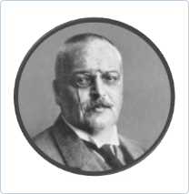
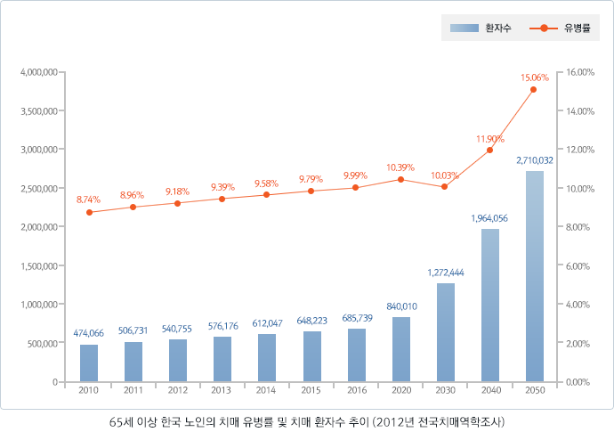
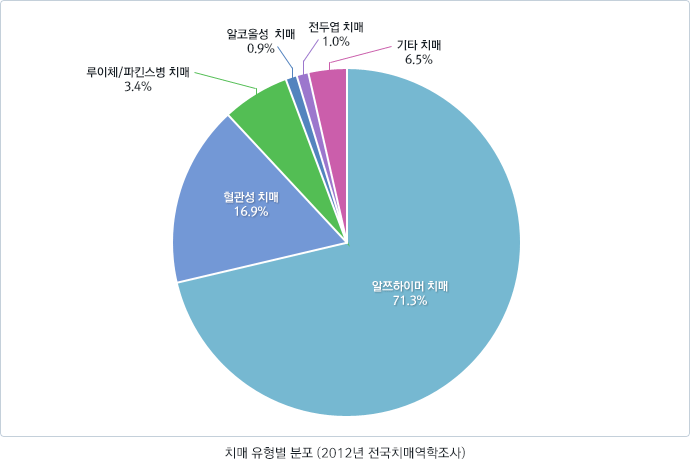

고대
피타고라스
인간의 일생이 7, 21, 49, 63, 82세의 5단계로 나누어지는데 뒤의 두가지 단계는 'senium' 혹은 'old age'로 정의된다고 했습니다. 그는 이 단계에 대해 " 세월이 많이 흘어 인생의 후반기에 이르기 까지는 오직 일부의 사람만이 생존하며 이 단계에 이르면 갓난아이와 같이 약해진다. " 고 언급했습니다.
시세로
로마의 시세로(Cicero, BC 106-43))는 이와 달리 정신기능의 쇠퇴가 노인에게 필연적인 것으로 생각하지 않았습니다. 즉 "노인의 쇠약은 노망(dotage), 광기(madness) 혹은 섬망(delirium)으로 불리며 이는 특징적이기는 하지만 모든 사람에게 나타나는 것은 아니며 의지가 약한 사람들에게만 나타난다."고 하여 적극적인 정신활동이 이러한 경향을 약화시킬 수 있을 것이라고 주장하였습니다.
근대이후
프랑스에서는 1381년부터 demence라는 용어를, 영국에서는 1592년부터 dementia라는 용어를, 스페인에서는 1791년부터 demencia라는 용어를 사용하였습니다.
하지만 치매에 대해 본격적으로 개념정립을 시도하여 의학의 분류체계에 포함시키고자 한 것을 과학이 급속하게 발전하기 시작한 근대 이후라고 볼 수 있습니다.
프랑스 Pinnel은 최초로 노인성치매(senile dementia)란 용어를 사용하였습니다.
20세기 들면서 나타난 획기적 변화는 현미경을 사용해 신경조직을 직접 관찰하는 의학기술의 발전이었습니다. 이런 변화를 바탕으로 두 명의 주요 인물이 커다란 업적을 남겼습니다.
토 빈스방거(1852~1929)
Binswanger는 뇌의 동맥경화로 인해 생기는 새로운 형태의 치매를 보고하였습니다.
"대뇌 피질(cortex)은 잘 유지되고 있으며 대부분의 백질(white matter)은 소실되었다. 이는 긴 혈관들의 동맥경화 때문인 것으로 보인다"고 기술하였습니다.

알로이스 알쯔하이머(1864~1915)
1906년에 알쯔하이머는 51세의 오거스트 디(Auguste D)라는 여성 환자에게서 진행성 인지기능장애, 환각, 망상, 생활능력상실의 증상을 확인하였고 부검 결과 뇌 피질의 신경세포 내에 섬유질이 다발을 이루고 있는 것(현재 신경섬유다발 또는 신경섬유매듭 neurofibrillary tangle으로 불리움)과 세포 바깥에 아밀로이드 반(amyloid plaque)이 존재한다고 보고하였습니다. 후에 그의 동료이자 상사인 크레펠린이 그의 업적을 기리어 그 병을 알쯔하이머 병이라고 명명하였습니다.
치매 유병률
어떤 집단 전체 인구 중 특정 질병을 가진 사람의 비율을 말하며 일반적으로 노인에서 치매 유병율이란
치매환자 수/65세 이상 노인 인구 100명 입니다.
전 세계적으로 치매는 65세 이상 노인에서 약 5-10%의 유병률을 보입니다. 2008년 지구상에는 현재 약 3,810만의 치매 환자가 있을 것으로 추정된 바 있습니다. 치매 유병률은 지역 간에 차이가 있습니다. 치매 유병률은 선진국의 경우는 미국 13.9%, 캐나다 8%, 영국 6.6%, 이탈리아가 8.3% 였고, 개발도상국은 대체로 그 보다는 전반적으로 낮은 유병률을 보여서 중국은 1.8%-4%, 인도 1.1% 였습니다. 그 이유는 분명하지는 않지만 인종, 환경의 차이 뿐 아니라 연구방법도 영향을 미칠 것으로 추정됩니다.
우리나라의 2012년 전국치매역학조사 결과, 2012년의 65세 이상의 노인의 치매 유병률은 9.18% 이었고, 치매 환자수는 540,755명 (남성 155,955명, 여성 384,800명)으로 추정되었습니다. 향후 치매 환자수는 2050년까지 20년 마다 2배씩 증가하여 2020년 약 84만 명, 2030년 약 127만 명, 2050년에는 271만 명으로 추산됩니다.
2008년도 치매 유병율 조사에서 치매인구수는 2011년에 50만, 2025년에 100만, 2043년에 200만을 넘을 것으로 추정된 바 있습니다. 그러나 2012년 연구에서는 2011년에 50만, 2024년에 100만, 2041년에 200만을 넘을 것으로 전망되어, 2008년 추정에 비해 100만을 넘는 시점은 1년, 200만을 넘는 시점은 2년 정도 앞당겨진 것으로 나타났습니다. 이에 치매인구수는 2008년 예측보다 1~2년 정도 빠르게 증가하고 있는 것으로 추정되었습니다.
65세 이상 한국 노인의 치매 유병률 및 치매 환자수 추이(2008년 전국치매역학조사)
연령별 치매 유병률 치매의 표본유병률은 65세를 기준으로 5세가 증가할 때 마다 거의 2배씩 증가하여, 65~69세 사이는 1.3% 이었지만, 85세 이상에서는 33.9%로 급격히 증가하였습니다.

치매 유병별 분포
알츠하이머 치매 유병률이 6.54%로 전체 치매의 71.3%를 차지하였고, 혈관성 치매가 1.55%로 전체 치매의 16.9%를 차지하였습니다(그림 3). 치매 유병률은 연령이 증가할수록, 학력이 낮을수록, 남성보다는 여성에서 높았습니다. 최경도 치매, 경도 치매, 중등도 치매, 중증 치매는 각각 전체 치매의 17.4%, 41.4%, 25.7%, 15.5%로 최경도 및 경도 치매가 전체의 58.8%를 차지하였습니다.

치매 발병율
발생율(incidence rate)이란 특정 기간 동안 질병을 가진 환자가 얼마나 발생하는가를 말하며 2005년 발표된 세계 치매 유병률에 대한 Delphi Consensus Study에 의하면, 매 해 세계적으로 연간 460만 명, 7초당 한 명씩 발생합니다. 이탈리아의 전향적 연구에서 치매 발병률은 노인인구 천 명당 12.4명/년 이었고, 유럽 8개국 (핀란드, 스웨덴, 덴마크, 네덜란드, 영국 등 북서유럽 5개국, 프랑스, 스페인, 이탈리아 등 남유럽 3개국)에서 시행된 치매 역학 연구에서는 치매 발병률은 65-69세는 인구 천 명당 2.5명/년이었는데, 90세 이상이 되면 치매 발병률은 인구 천명당 85.5명/년으로 급격히 증가하였습니다. 우리나라의 치매 발병률은 노인 인구 천 명당 18.8명/년 이었고 다른 나라와 마찬가지로 연령이 증가함에 따라서 치매의 발병률도 급격하게 높아져서 65-74세는 인구 천 명당 12.5명/년 이었는데, 85세 이상에서는 87.2명/년 이었습니다.
치매는 다양한 원인 질환에 의해 인지기능 저하를 보이는 일종의 증후군(syndrome)입니다. 따라서 원인 질환에 따라 위험인자가 다를 수 있지만, 치매의 원인 중 약 90%를 차지하는 알쯔하이머 치매와 혈관성치매는 인구사회학적 요인이나 혈관성 위험인자 등 상당수 위험 인자를 공유하는 것으로 알려져 있습니다.
사회인구학적 위험인자
- 연력
고령은 치매의 가장 일관되고 강력한 위험인자로서 연령이 증가하면서 치매의 유병률이 급격하게 증가됩니다. 65세 이상 노인에서 연령이 5세 증가할 때 마다 치매 유병률은 2배 정도 높아져서 65-69세의 유병률은 3% 정도인데 80-84세 노인들의 경우는 약 25% 정도의 치매 유병률을 보입니다.
- 성별
대부분의 역학연구에서 남성에 비해 여성이 알쯔하이머 치매의 발병 위험성이 더 높았습니다. 혈관성 치매의 위험성은 여성에 비해 남성에서 오히려 더 높다는 연구 보고들이 있으며, 뇌졸중의 주요 위험인자인 흡연이나 음주 등이 여성에 비해 남성에 많다는 점이 그 기전으로 제시되고 있으나, 혈관성 치매의 경우 성별에 따른 차이를 발견하지 못한 연구들도 많아 아직 추적 평가가 필요합니다.
- 학력
학력과 치매 발병과의 연관은 아직은 논란은 있지만 Stern 등은 8년 이상의 교육을 받은 사람은 그렇지 않은 사람에 비해 알쯔하이머 치매의 위험이 반으로 감소한다고 보고하였습니다. EURODEM 연구에서는 낮은 교육 수준은 여성에서는 치매의 위험인자이지만 남성에서는 그렇지 않다고 보고하였습니다. 학력이 치매의 발병 위험성에 간접적으로 영향을 줄 가능성도 있는데 낮은 교육 수준의 사람들은 약물이나 영양부족 등을 겪을 가능성이 상대적으로 높아 치매의 발병이 흔할 가능성이 있습니다.
유전적 위험인자
- 치매 가족력
알쯔하이머 치매 환자의 직계 가족은 다른 사람에 비해 알쯔하이머 치매에 걸릴 가능성이 2-4배 높고, 직계 가족 내에 2명 이상의 알쯔하이머 치매 환자가 있을 경우, 위험성은 현저히 증가하게 됩니다. 알쯔하이머 치매에 걸릴 확률은 부모나 형제 중 한 사람이 산재성 알쯔하이머 치매 환자일 경우에는 15-19%, 이란성 쌍둥이 형제가 환자일 경우는 40%, 일란성 쌍둥이 형제가 환자일 경우에는 84%에 이릅니다.
- 유전자 돌연변이 및 다형성
대부분의 알쯔하이머 치매 환자는 이러한 유전자 돌연변이가 없이 발생하게 되는데, 이런 유형의 산재성(sporadic) 알쯔하이머 치매의 위험성은 19번 염색체에 위치한 아포지단백(APOE) 유전자의 다형성에 의해 영향을 받습니다. APOE 유전자는 ε2, ε3, ε4 등 세가지 대립유전자를 갖는데, 알쯔하이머병에 걸릴 위험성은 ε4를 하나 가진 사람이 하나도 가지지 않은 사람에 비해서 4.0(2.8~5.7)배 높고, 또 APOE ε4는 용량효과가 있어 두 개 가진 사람은 20.1(7.2~56.3)배 높습니다.
환경적 위험인자
- 흡연
최근 19개의 치매 역학 연구에 대한 메타 분석에서는 흡연은 알쯔하이머 치매의 위험성을 1.79배, 혈관성 치매의 위험성을 1.78배 높이는 것으로 분석되었고. 최근 발표된 전향적 코호트 연구들에서도 흡연이 알쯔하이머 치매를 포함한 치매의 위험성을 2배 가량 높이는 것으로 확인되었습니다.
- 음주
가벼운 음주, 특히 포도주의 경우는 치매의 위험성을 낮추는데 도움이 되는 것으로 보고되었고, 23개의 역학 연구에 대한 메타분석에서 소량의 음주는 주종에 관계없이 치매의 위험성을 0.63배, 알쯔하이머 치매의 위험성을 0.57배 수준으로 낮추는 것으로 보고되었습니다.
- 영양
산화작용이 알쯔하미어병의 발병기전에 매우 중요한 역할을 하기는 하지만 항산화작용이 큰 비타민 C, E 등이 알쯔하이머 치매를 방어할 수 있는 지에 대해서는 아직 논란이 많습니다. 육식을 주로 하는 사람들은 채식을 주로 하는 사람들에 비해 치매가 발생할 위험성이 높으며, 높은 혈중 지질 총량, 포화 지방, 콜레스테롤이 치매 발병 위험성을 2배 이상 높인다고 보고되었습니다.
- 사회적 지지망 및 활동
미혼, 독거, 사회적으로 고립된 노인들은 그렇지 않은 노인들에 비해 알쯔하이머 치매의 발병위험성이 높았습니다. 사회적인 활동이 활발하지 못하거나 여가활동을 즐기지 않는 노인의 경우도 역시 알쯔하이머 치매의 위험이 높았습니다. 한 연구에서 여가활동, 독서, 보드게임, 악기 연주, 춤 등의 활동을 한 경우 치매 발생률이 감소됨을 확인되었습니다.
신체적 정신적 건강상태
- 심뇌혈관질환
대부분의 혈관성 위험인자는 혈관성 치매 뿐 아니라 알쯔하이머 치매와도 연관이 있는 것으로 알려지고 있습니다. 뇌혈관질환의 가장 중요한 위험인자인 고혈압은 인지기능 저하 및 혈관성 치매의 중요한 위험인자로서 호놀룰루-아시안 노화 연구(Honolulu-Asia aging study)에서도 치료 받지 않은 중년기의 고혈압은 치매 발생 위험을 4.8배 증가시켰습니다.
- 우울증
우울증은 횡단적 연구에서뿐만 아니라 전향적 연구에서도 알쯔하이머 치매의 발병위험성을 증가시키는 것으로 확인되었는데, 우울증은 치매 발병 위험성을 2배 이상 증가시킵니다.
- 뇌외상
여러 횡단적 및 후행적 연구에서 뇌외상의 병력과 알쯔하이머 치매 발병위험성과 유의한 연관성이 보고되었지만, 전향적 연구에서는 이 둘 사이의 연관성이 확인되지 않아, 뇌외상이 치매의 위험인자인가에 대해서는 아직 논란이 있지만, 중등도 내지 심각한 뇌외상의 병력은 기전은 명확하지 않으나 치매의 위험성을 높일 수 있는 것으로 평가됩니다.
- 에스트로젠
에스트로젠 대치 요법(estrogen replacement therapy; ERT)이 폐경 후 여성에서 알쯔하이머 치매 발병 위험성을 낮춘다는 보고들이 있었지만, 최근 미국 국립 보건원의 지원을 받아 실시된 대규모 전향적 역학 연구에서 ERT가 폐경기 여성의 인지기능을 호전시키지 못할 뿐만 아니라, 경도인지손상과 치매의 위험성을 오히려 증가시키는 것으로 확인되었습니다.
- 진통소염제
염증 반응이 알쯔하이머 치매의 중요한 뇌 병리 소견이기는 하지만, 알쯔하이머 치매에 대한 비스테로이드성 진통소염제(NASID)의 예방 및 치료 효과에 대한 연구는 일관된 결과를 얻지 못하고 있습니다. 최근 55세 이상 성인 6989명을 7년간 추적 관찰한 전향적 코호트 연구인 로테르담 연구에서는 NSAIDS를 2년 이상 복용하는 사람이 그렇지 않은 사람에 비해 알쯔하이머 치매발병 위험성이 약 80% 감소하였고, 혈관성 치매에서는 영향이 없었습니다.
우리나라의 치매위험 인자 (2008년 전국치매역학조사)
보건복지가족부의 지원 하에 실시된 2008년 전국역학조사에서의 치매의 위험인자에 대한 결과는 다음과 같습니다.
- 고령(85세 이상이 65-69세에 비해 14.9배), 여성(남성에 비해 2.85배), 무학(교육년수 7년 이상에 비해 9.2 배) 이 치매 위험과 높은 연관성을 보였습니다.
- 사별, 이혼, 별거, 미혼 등 결혼 생활을 유지하지 못하는 사람이 치매 위험이 2.9배 가량 높았습니다.
- 중강도 이상의 규칙적 운동을 하는 사람의 치매 위험이 그렇지 않는 사람에 비해 약 1/3 수준으로 낮았으나, 운동량 및 운동 종류와 치매 위험 간의 인과관계는 전향적 후속 연구를 통해 규명되어야 합니다.
- 10분정도 이상의 의식장애가 있는 두부외상의 과거력이 있는 사람은 약 3.8배 가량 치매 위험이 높았습니다.
- 우울증이 있는 사람은 약 3배 가량 치매 위험이 높았습니다.